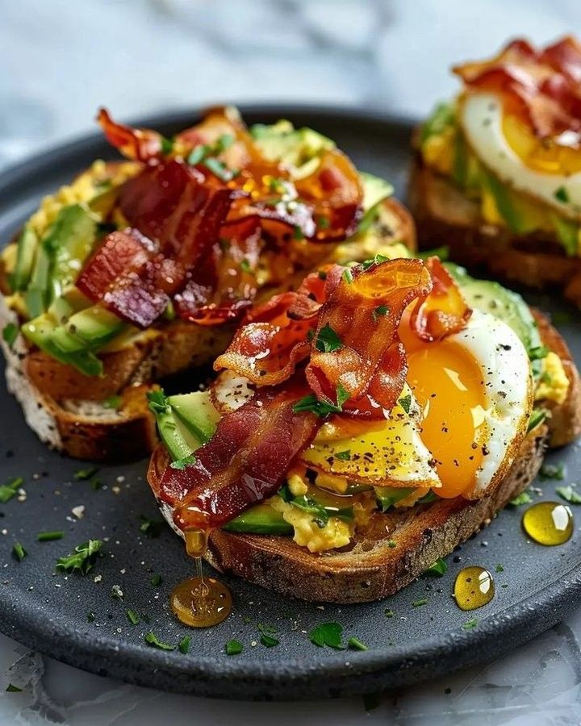
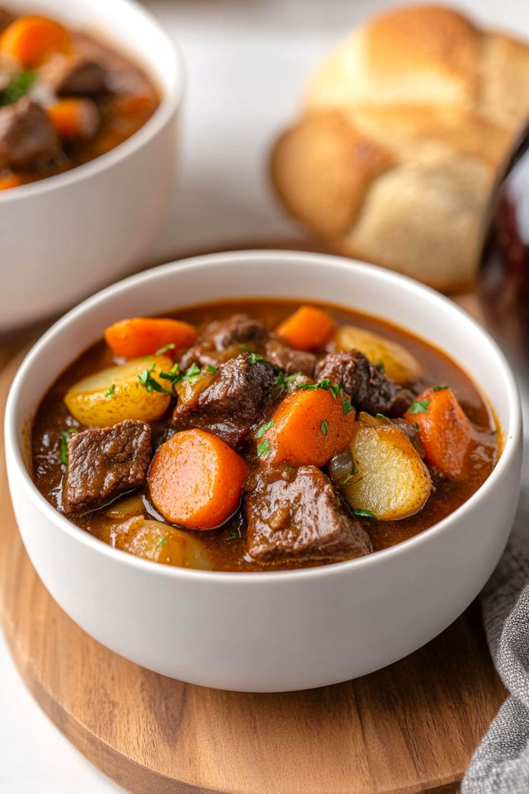

Sabores que cuidam de você
Venha conhecer os melhores sabores de uma comida saúdavel. A melhor coisa é comer algo gostoso sem culpa.

Cardápio equilibrado:
Cardápio Equilibrado – Segunda a Sexta Segunda-feira
Café da manhã: Pão integral com queijo branco + 1 banana + café sem açúcar Almoço: Arroz integral + feijão + frango grelhado + salada de alface e cenoura + suco natural Lanche da tarde: Iogurte natural com aveia Jantar: Sopa de legumes + 1 fatia de pão integral + chá de camomila

Terça-feira Café da manhã: Vitamina de mamão com leite + 1 fatia de pão com pasta de abacate Almoço: Purê de batata-doce + lentilha + carne moída + salada de rúcula e tomate Lanche da tarde: Frutas secas (damasco + castanhas) Jantar: Omelete com legumes + arroz integral

Quarta-feira Café da manhã: Mingau de aveia com banana + canela Almoço: Macarrão integral + frango desfiado + brócolis + cenoura cozida Lanche da tarde: Tapioca com queijo + chá verde Jantar: Salada completa (folhas, ovo cozido, grão-de-bico, pepino, azeite)

Quinta-feira Café da manhã: Pão de aveia + ricota + suco natural de laranja Almoço: Arroz + feijão + peixe grelhado + abóbora refogada + couve Lanche da tarde: Fruta da estação + iogurte Jantar: Panqueca de frango com salada

Sexta-feira Café da manhã: Smoothie de frutas vermelhas + granola Almoço: Quinoa + grão-de-bico + carne cozida + espinafre refogado Lanche da tarde: Bolinho de banana com aveia caseiro Jantar: Sopa de abóbora + torrada integral

Dicas extras: Beba muita água ao longo do dia (pelo menos 2 litros). Evite frituras e excesso de sal. Dê preferência a frutas, legumes e verduras da estação. Evite alimentos industrializados e refrigerantes.